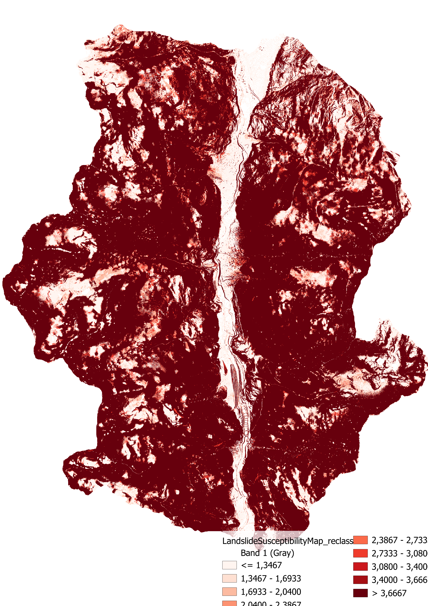

This section presents key findings, derived from comprehensive terrain analysis, detailed landslide inventories, and spatial assessments. Explore the visualizations and data insights to understand the patterns and risks associated with landslides in Valdisotto, Lombardy.
The susceptibility map shows that high-risk areas (red zones) are mainly in the central and southern regions, while low-risk areas (green zones) are predominantly near roads. This strategic placement of infrastructure in safer zones enhances accessibility, safety for evacuation routes, and emergency services, thereby improving regional resilience against landslides.
The analysis reveals a significant portion of the population living in low susceptibility zones, which is encouraging from a risk management perspective. However, a considerable population still resides in high-risk areas (Level 4), necessitating targeted mitigation strategies.
The Random Forest classifier's higher accuracy and balanced performance across both hazard levels make it the most reliable model for landslide susceptibility mapping in this analysis. This ensures more accurate identification of high-risk areas, thereby aiding in effective risk management and mitigation strategies.
Continued monitoring and risk mitigation efforts are essential, especially for populations in higher susceptibility zones to minimize potential landslide impacts.
As detailed in the methods section, the best overall accuracy was obtained using the Random Forest Classifier, outperforming the SVM and K-Nearest Neighbor classifiers, as shown in the error table. Consequently, the analysis of the Landslide Susceptibility Mapping will focus on the results obtained with the Random Forest Classifier.
| Hazard | 1 | 2 | UA | PA | OA |
|---|---|---|---|---|---|
| 1 | 180 | 27 | 0.87 | 0.8 | 0.84 |
| 2 | 42 | 198 | 0.82 | 0.88 | |
The table provides detailed statistics of the population within different susceptibility levels:
| Susceptibility | Area (m2) | Total population | Average population density |
|---|---|---|---|
| Level 1 | 12,919,317.8 | 2420.76 | 1.249 |
| Level 2 | 5,555,906.95 | 416.26 | 0.499 |
| Level 3 | 13,466,237.8 | 315.88 | 1.156 |
| Level 4 | 58,186,953.4 | 304.30 | 0.034 |
Covers an area of 12,919,317.8 m² with a total population sum of 2420.76 and an average population density of 1.25.
Covers an area of 5,555,906.95 m² with a total population sum of 416.26 and an average population density of 0.50.
Covers an area of 13,466,237.8 m² with a total population sum of 315.88 and an average population density of 0.16.
Covers an area of 58,186,953.4 m² with a total population sum of 304.30 and an average population density of 0.03.
The pie chart illustrates the percentage of the population living in areas with different susceptibility levels. The largest portion of the population (69.6%) resides in areas with low susceptibility (Level 1), while 12% are in Level 2, 9.09% in Level 3, and 8.76% in Level 4.
Despite the high percentage in low-risk areas, approximately 30% of the population still lives in zones with some level of landslide susceptibility (Levels 2 to 4). This indicates a need for targeted risk mitigation strategies
{kind=link}